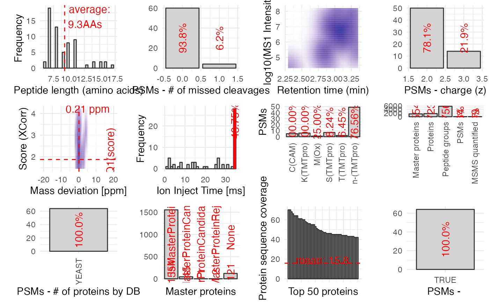

plotPDTMTqc.RdBased mainly on the information from the PSMs.txt file (but also using Proteins.txt and PeptideGroups.txt), this function creates a summary QC plot for a proteomics experiment quantified with Proteome Discoverer.
plotPDTMTqc(
pdOutputFolder,
pdResultName,
masterOnly = FALSE,
poiText = "",
doPlot = TRUE,
textSize = 4
)Character scalar pointing to the output folder from
Proteome Discoverer. The folder must contain the files
pdResultName_Proteins.txt, pdResultName_PeptideGroups.txt,
pdResultName_PSMs.txt, pdResultName_MSMSSpectrumInfo.txt
and pdResultName_QuanSpectra.txt.
Character scalar giving the shared prefix for the
Proteome Discoverer output files (see pdOutputFolder).
Logical scalar, whether to only consider Master proteins.
Character scalar, pattern of interest to search for in the protein description.
Logical scalar, whether to render the plot or not.
Numeric scalar, the font size of the text shown in the plots.
Invisibly, a list of ggplot objects.
plots <- plotPDTMTqc(
pdOutputFolder = system.file("extdata", "pdtmt_example",
package = "einprot"),
pdResultName = "Fig2_m23139_RTS_QC_varMods",
doPlot = TRUE)
